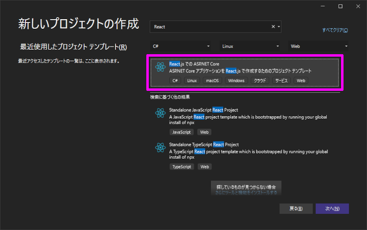
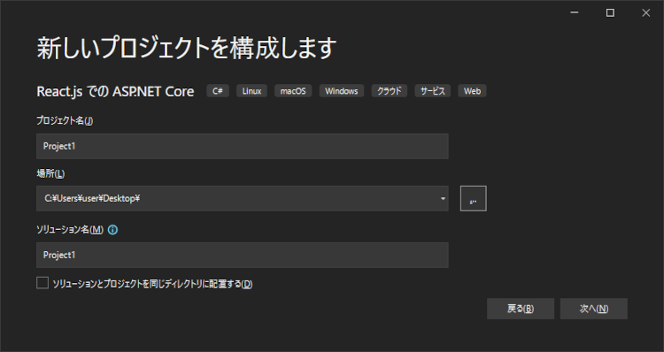
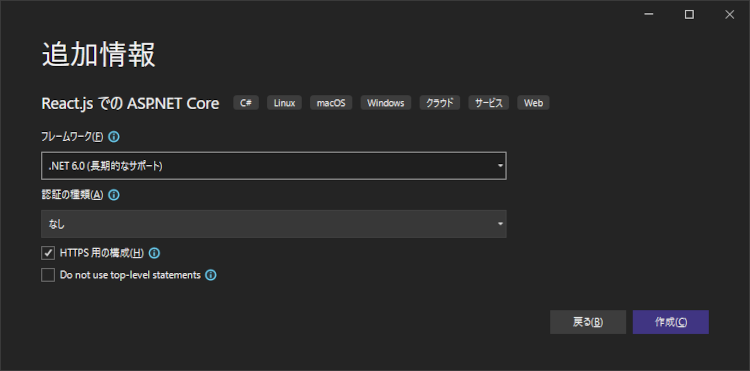
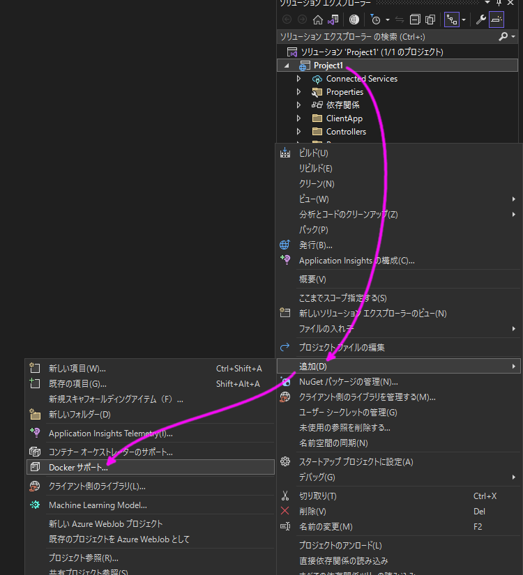
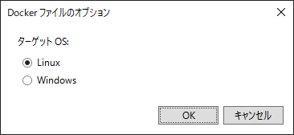
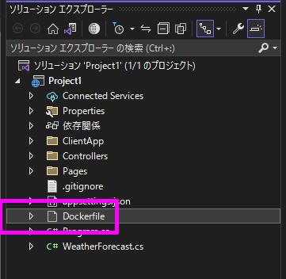
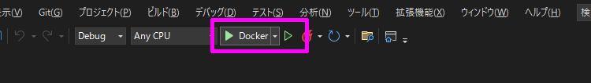
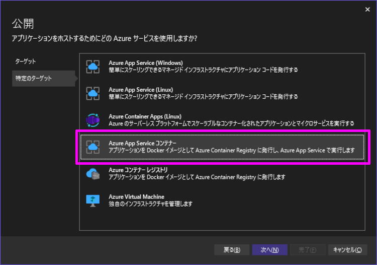
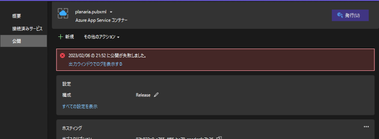

環境
プロジェクト作成
まず、次のプロジェクトテンプレートを選択してプロジェクトを作成します。

この時「Dockerをサポートする」ボタンがないですが、気にせずすすめます。


Docker サポート
ソリューションエクスプローラーのプロジェクトを右クリックして「追加 > Docker サポート」の順で選択します。

ターゲットOS は Linux を選択。

そうすると、プロジェクトに Dockerfile が追加されて Dockerコンテナーを使って実行することができるようになります。


Azure App Service コンテナー
Dockerイメージ を App Service で公開しようとすると、エラーになります。


エラー内容
1
2
3
4
5
6
7
8
9
10
11
12
13
14
15
16
17
18
19
20
21
22
23
24
25
26
27
28
29
30
31
32
33
34
35
36
37
38
39
40
41
42
43
44
45
46
47
48
49
50
51
52
53
54
55
56
57
58
59
60
61
62
63
64
65
66
67
68
69
70
71
72
73
74
75
76
77
78
79
80
81
82
83
| #1 [internal] load build definition from Dockerfile
#1 sha256:fd69111829751219d7edf42f89da53e7cf47d4908862709b9d18b215f1b3e44d
#1 transferring dockerfile: 32B done
#1 DONE 0.0s
#2 [internal] load .dockerignore
#2 sha256:c4f4e756dbbcf8381b629f512d507861c41054f75af040e6446b520831d278ed
#2 transferring context: 35B done
#2 DONE 0.0s
#4 [internal] load metadata for mcr.microsoft.com/dotnet/aspnet:6.0
#4 sha256:ac4494cbca04ddb415c76edcbcc7688784c2a6ea65dd656286c013738aa3b75f
#4 DONE 0.0s
#3 [internal] load metadata for mcr.microsoft.com/dotnet/sdk:6.0
#3 sha256:9eb4f6c3944cfcbfe18b9f1a753c769fc35341309a8d4a21f8937f47e94c712b
#3 DONE 0.2s
#8 [build 1/7] FROM mcr.microsoft.com/dotnet/sdk:6.0@sha256:b40939dddbea23e939af225cab4b30df01afc47ce1e8beb1f7f249aaca8babcc
#8 sha256:76e509d7e54fdb92072ab18138258abac6e86475066c51324cf45ba7f0804c47
#8 DONE 0.0s
#9 [build 2/7] WORKDIR /src
#9 sha256:e494b4858ee07616e22a62c4454335ac4fdc9de8656bf169e1f841f1388c350b
#9 CACHED
#5 [base 1/2] FROM mcr.microsoft.com/dotnet/aspnet:6.0
#5 sha256:50f1ddc10932c4a74c7af5704e931a9489c710faea4f2381fe2380827a900e00
#5 DONE 0.0s
#10 [internal] load build context
#10 sha256:60e98d003d93ec84bc68bb7a902cb15e84db3225c2284bb93fc724b2c40d1b46
#10 transferring context: 3.64MB 0.1s done
#10 DONE 0.1s
#11 [build 3/7] COPY [Project1/Project1.csproj, Project1/]
#11 sha256:f644f41115f2f19a11358071476fe23ff6a951f87aef01810095b1dfdaaa4d4c
#11 DONE 0.0s
#12 [build 4/7] RUN dotnet restore "Project1/Project1.csproj"
#12 sha256:f56db46d2dd393eaa0cb7bd229f8bfd4744138dbae97abf347b7858bf92ebec1
#12 0.726 Determining projects to restore...
#12 2.236 Restored /src/Project1/Project1.csproj (in 1.3 sec).
#12 DONE 2.3s
#13 [build 5/7] COPY . .
#13 sha256:40714ec53492ca63cbb6ea1fb905956fa181d55cc309d0d0504764b390dad647
#13 DONE 0.0s
#14 [build 6/7] WORKDIR /src/Project1
#14 sha256:a7cc8fd6690e5e9bc4963c0a98662622b6f9acf7be3ec00c2b72938ce557e01a
#14 DONE 0.0s
#15 [build 7/7] RUN dotnet build "Project1.csproj" -c Release -o /app/build
#15 sha256:c7df99e63e997e3f58960e500af89c3205b6ab893173791a2b13740eed216e84
#15 0.609 MSBuild version 17.3.2+561848881 for .NET
#15 1.063 Determining projects to restore...
#15 1.276 All projects are up-to-date for restore.
#15 3.291 Project1 -> /app/build/Project1.dll
#15 3.299
#15 3.299 Build succeeded.
#15 3.299 0 Warning(s)
#15 3.299 0 Error(s)
#15 3.299
#15 3.299 Time Elapsed 00:00:02.63
#15 DONE 3.3s
#16 [publish 1/1] RUN dotnet publish "Project1.csproj" -c Release -o /app/publish
#16 sha256:8ab434fb4c2e6d0b30ae3e646de0c2547f78fe89ae0a803ed345f408427b2a9f
#16 0.611 MSBuild version 17.3.2+561848881 for .NET
#16 0.941 Determining projects to restore...
#16 1.277 All projects are up-to-date for restore.
#16 1.658 Project1 -> /src/Project1/bin/Release/net6.0/Project1.dll
#16 1.688 /bin/sh: 2: /tmp/MSBuildTemproot/tmp09e3171f7f36474ba081126554271511.exec.cmd: npm: not found
#16 1.693 /src/Project1/Project1.csproj(42,5): error MSB3073: The command "npm install" exited with code 127.
#16 ERROR: executor failed running [/bin/sh -c dotnet publish "Project1.csproj" -c Release -o /app/publish]: exit code: 1
------
> [publish 1/1] RUN dotnet publish "Project1.csproj" -c Release -o /app/publish:
------
executor failed running [/bin/sh -c dotnet publish "Project1.csproj" -c Release -o /app/publish]: exit code: 1
2>ビルドに失敗しました。詳細については、出力ウィンドウを確認してください。
========== ビルド: 成功 1、失敗 0、最新の状態 0、スキップ 0 ==========
========== 公開: 0 正常終了、1 失敗、0 スキップ ==========
|
Dockerfile
原因は DOTNETイメージ Nodejs が存在しないため「npm install」ができなかった。
Dockerfile に次の2行を追加すると、無事に発行することができるようになりました。
1
2
3
4
5
6
7
8
9
10
11
12
13
14
15
16
17
18
19
20
21
22
23
24
25
26
27
28
| #See https://aka.ms/containerfastmode to understand how Visual Studio uses this Dockerfile to build your images for faster debugging.
FROM mcr.microsoft.com/dotnet/aspnet:6.0 AS base
WORKDIR /app
EXPOSE 80
EXPOSE 443
FROM mcr.microsoft.com/dotnet/sdk:6.0 AS build
WORKDIR /src
### 追加↓↓↓
RUN curl -fsSL https://deb.nodesource.com/setup_19.x | bash -
RUN apt-get update && apt-get install -y nodejs
### 追加↑↑↑
COPY ["Project1/Project1.csproj", "Project1/"]
RUN dotnet restore "Project1/Project1.csproj"
COPY . .
WORKDIR "/src/Project1"
RUN dotnet build "Project1.csproj" -c Release -o /app/build
FROM build AS publish
RUN dotnet publish "Project1.csproj" -c Release -o /app/publish
FROM base AS final
WORKDIR /app
COPY --from=publish /app/publish .
ENTRYPOINT ["dotnet", "Project1.dll"]
|
おわりに
参考サイト
https://yokoken.hatenablog.com/entry/2020/01/15/102344